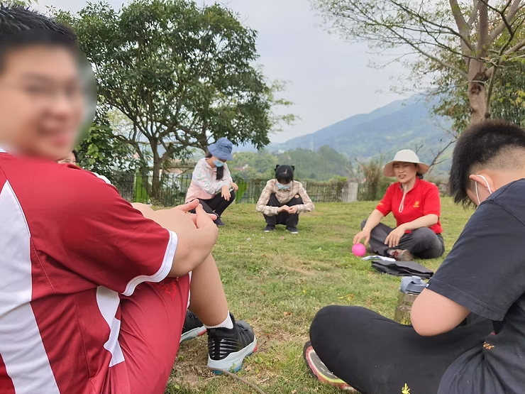
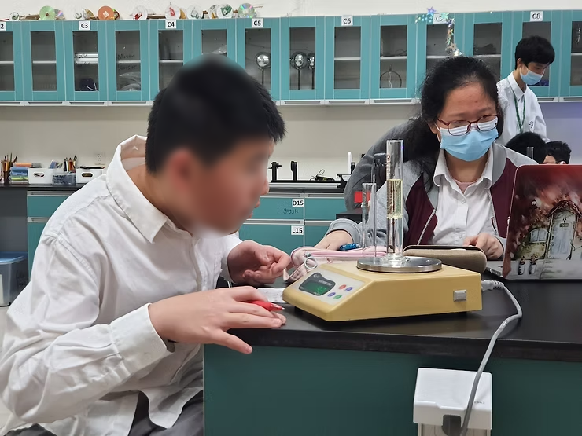
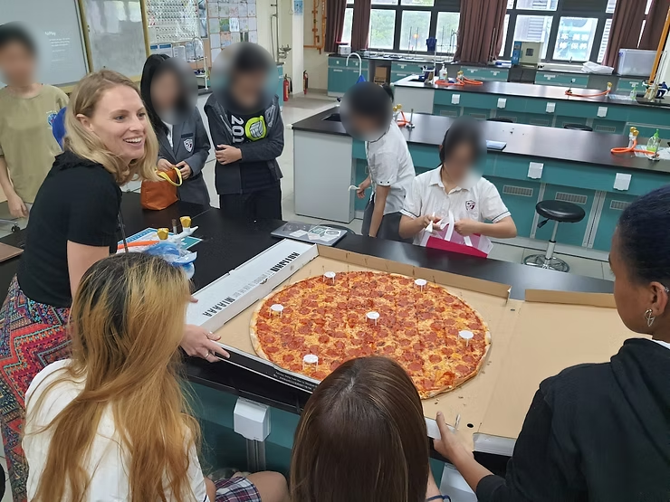
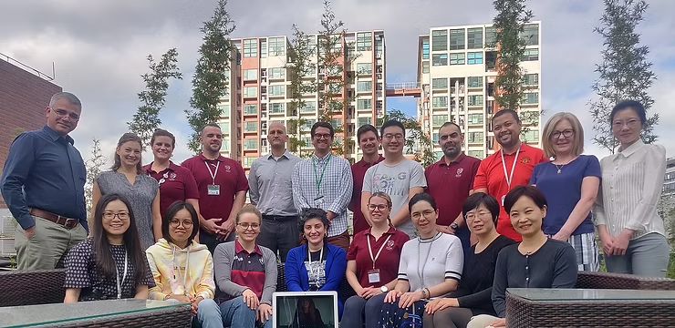
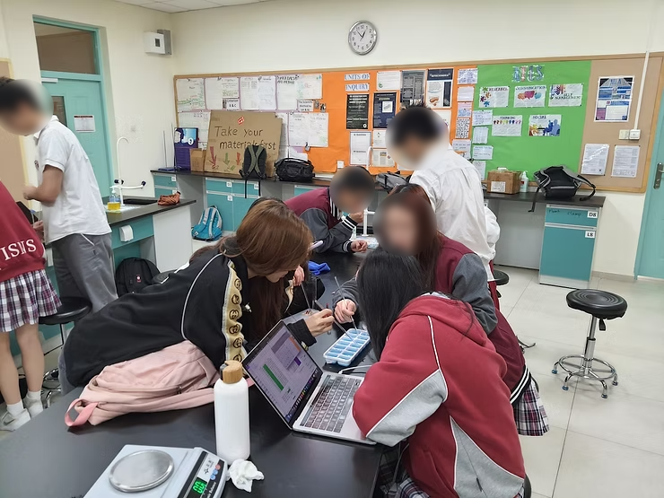

The school community fosters internationally minded people who embody all attributes of the IB learner profile. (0101-03)

Students on a Week Without Walls trip where they get to demonstrate various IB Learner Profile attributes.
Annual evaluation
A year of practice, reflected on against the IB Standards & Practices Framework.



I came up with a Google Scholar guide to emphasize the importance of using scholarly articles and citing them correctly in students' work.


I am an International Baccalaureate (IB) middle year program (MYP) science and diploma program (DP) physics teacher. The students in my school would have been introduced to the basics of the scientific method and scientific inquiry when they are in Grade 6. For this reflection, I will only discuss the scientific inquiry. As noted by Gauch (2013), the scientific method (TSM) is frequently misunderstood as "a fixed sequence of steps" (p. 5). The steps he was referring to are (1) observation, (2) research, (3) hypothesis, (4) experiment, (5) analysis, and (6) result. Harwood (2004) pointed out that in practice scientific inquiry might not follow a linear process. However, variation of TSM provides a platform from which scientists can base their work on.
So is instructional design a science? There are instances where instructional design can be considered a science. An investigation or inquiry within science requires a dependent and independent variable. Thus the study of instructional design can be a science when there is a dependent variable to be measured (for example, an activity chosen during the design process) and an independent variable (the outcome after implementing the activity in the classroom). The next part is when things get a little unclear. In natural sciences, besides identifying the independent and dependent variables, one also needs to be aware of the need for controlled variables. On top of that, the experiment's result should be readily repeated when conducted under controlled conditions. However, when dealing with individuals, there are so many uncontrolled variables involved that the results can often vary when the study is repeated.
I will use my own experience as an example. I am currently teaching two Grade 9 science classes. If Instructional Design is purely a science, I would expect similar results when carrying out my lessons in an identical manner. The reality is when I conduct lessons in a similar manner for both classes, I can get different results. This is due to the uncontrolled variables mentioned earlier. Many factors affect learning in the classroom, such as students' motivation, cultural, social, and preferred learning methods. This is where I feel that instructional design crosses the realm of science into the realm of art.
I am bad at drawing. Even when I'm given the same drawing material given to an artist, my drawing's output will almost definitely be worse than that of the artist. A teacher is like an artist as well. The teacher's knowledge and experiences would enable him or her to shape the outcome of the lesson. When I was a beginning teacher, I tended to follow a lesson plan to a T. If my class deviates from the original plan, I would consider my lesson a failure. Even after identifying the "best teaching methods for specific learners in a specific context, attempting to obtain a specific goal" (IEEE, 2001, p.1, as cited in Botturi, 2003), I now find myself adapting to my student's needs during the lesson itself. If I were to use the artist analogy still, then the science of Instructional Design is like the drawing tools given to the artist; how the teacher uses the science of Instructional Design is akin to how an artist would use his or her tools.
In conclusion, I agree with Richey et al. (2017) when they said that Instructional Design is "the science and art of creating detailed specifications for the development, evaluation, and maintenance of situations which facilitate learning and performance" (p. 3). Teachers should use fundamentally sound institutional design principles that are based on the scientific method as put forth by Seel et al. (2017) and use their professional judgment to make necessary tweaks to best suit the needs of their classes.